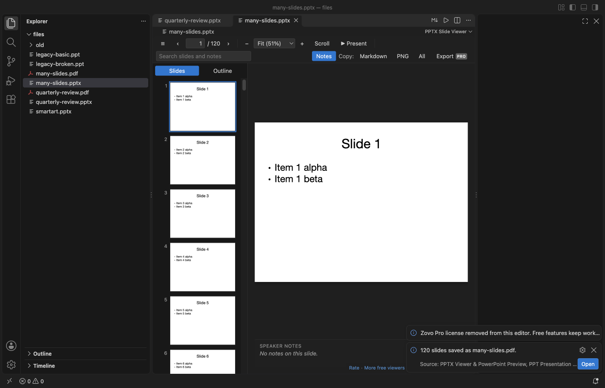

Open files in VS Code and Cursor / Office files
Turn PPTX slides into PNG images
Install PPTX Viewer by Zovo in VS Code and open the deck. To save one slide, click "PNG" in the toolbar: that is free. To save every slide, click "Export" and pick "Export all slides as PNG": each slide becomes a picture about 1920 pixels wide, named deck-slide-01.png and up so they sort in order. The same menu saves the deck as one PDF. The exports are Zovo Pro (USD 19 once) with 3 free tries each.
Free, MIT license. Extension ID zovo.pptx-slide-viewer, version 0.5.1. Needs VS Code 1.90.0 or newer.

Steps in VS Code
- Install PPTX Viewer from the Marketplace, or press Ctrl+P (Cmd+P on macOS) and run
ext install zovo.pptx-slide-viewer. - Click the .pptx file in the Explorer. It opens with thumbnails and the first slide.
- For one slide: go to it and click "PNG" in the toolbar to save it, or copy it.
- For every slide: click "Export" and pick "Export all slides as PNG", then a folder. It asks before it replaces a file.
- For a PDF: click "Export" and pick "Export the deck as PDF".
Steps in Cursor, Windsurf or VSCodium
- Open the Extensions view with Ctrl+Shift+X (Cmd+Shift+X on macOS).
- Search for
zovo.pptx-slide-viewerand click Install. Cursor, Windsurf and VSCodium install from Open VSX, where it is published aszovo/pptx-slide-viewer. - If your editor has no gallery, download the .vsix from the Open VSX page and run "Extensions: Install from VSIX...".
- Then use it the same way as in VS Code.
What PPTX Viewer handles
- .pptx, .ppsx and .potx decks. Old .ppt files open as text only.
- The pictures are drawn on your computer by the same code that shows the slides. No LibreOffice, no PowerPoint, no upload.
- A 120-slide deck gave a 120-page PDF of 6.4 MB in the release test.
- Convert every deck in a folder to Markdown with titles, bullets, tables and speaker notes (also Zovo Pro).
What it does not do
- The PDF pages are pictures of the slides, so the text in the PDF cannot be selected or searched.
- Fonts that are not installed are replaced by a close match, so line breaks can differ a little from PowerPoint.
- Old binary .ppt files show text only, so they export no pictures.
Free and Zovo Pro
Free, and staying free: viewing, Present, speaker notes, search, thumbnails and the outline, copying or saving one slide as PNG, and Copy as Markdown for a slide or the whole deck.
Zovo Pro adds these tools to PPTX Viewer. Each one works 3 times on your computer before it asks for a license. Nothing about Pro shows when you open a file: no popup, no countdown, no banner.
- Export all slides as PNG, about 1920 pixels wide.
- Export the deck as one PDF, one page per slide.
- Convert every deck in a folder to Markdown with speaker notes.
Zovo Pro costs USD 19 once. It is not a subscription, and one purchase covers every Zovo VS Code extension. Today it also covers the Pro tools in Hex Viewer, Postgres & MySQL Query Client and DOCX Viewer, and Pro tools added to other Zovo extensions later.
Two ways to unlock it:
- GitHub Sponsors: pick the "$19 one time" tier. Then, in VS Code, click a Pro tool and pick "Unlock with GitHub Sponsors" (or type "GitHub Sponsors" in the Command Palette) and sign in with the same GitHub account. A monthly sponsorship of USD 10 or more that is still running counts too.
- PayPal, no GitHub account needed: send USD 19 by PayPal with "Zovo Pro" in the note, then post the transaction ID with the Zovo Pro key form (a public GitHub issue, so post only the ID). The license key goes to the email address of your PayPal account within a day. Click a Pro tool and pick "I have a license key" (or type "license key" in the Command Palette) and paste it. The key is checked on your computer, with no network call.
A team of 5: USD 59 once by PayPal, with "Zovo Pro Team" in the note. Every rule and every Pro tool is on the Zovo Pro page.
In JetBrains IDEs (IntelliJ IDEA, PyCharm, WebStorm, CLion and others)
- DOCX & PPTX Viewer by Zovo. Our JetBrains plugin views decks. It was waiting for JetBrains review on 9 November 2026 and has no exports.
Other options
- PPTX Viewer Pro (
PptxViewerPro.pptx-viewer-pro, 22,693 installs, not on Open VSX). Its own description: "Converts slides to images using LibreOffice (soffice)." It needs LibreOffice installed. Not on Open VSX. - PowerPoint. File, Export, PNG saves every slide. It needs a PowerPoint licence.
- LibreOffice.
soffice --headless --convert-to pdf deck.pptxmakes a PDF with selectable text. Free, but a large install.
Install counts and Open VSX status were checked on 9 November 2026. Descriptions in quotes are the extensions' own.
Questions
Can I save one slide as PNG for free?
Yes. The PNG button saves or copies the current slide, free.
Is the PDF text searchable?
No. Each page is a picture of the slide. For a PDF with text, use PowerPoint or LibreOffice.
What does Zovo Pro cost?
USD 19 once for every Zovo VS Code extension. Each export works 3 times on your computer before it asks.
More about PPTX Viewer
Read the PPTX Viewer page for every feature and setting, or the source code on GitHub.
Related guides
- View a PowerPoint .pptx file in VS Code
- Open a .docx Word file in VS Code
- Read PDFs in dark mode in VS Code
- Open a PDF in Cursor
Zovo Pro and support
Zovo Pro: USD 19 once, every Zovo viewer. It turns on the Pro tools in this extension and in the other Zovo extensions you use. The free features stay free.
After a card payment your license key shows on the next page. Paste it with the command "Zovo Pro: Enter a key".
You can also support the work with no Pro:
Need your format supported?
Open a format request with a sample file, and I reply there whether it can be done. For USD 299 once, through this GitHub Sponsors tier, I add your file format or a missing feature to this extension, with tests, within 7 days.